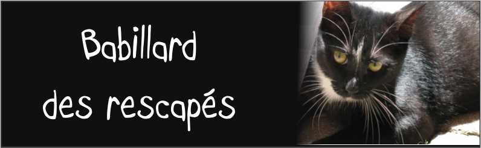

|
|
|
 |
|
|
| ACCUEIL | MAINTIEN ET MAISON D'HIVER | ADOPTIONS |
|---|
Chats stérilisés, vaccinés et vermifugés. Les frais d’adoption seront appliqués afin de couvrir simplement le coût les opérations de castration/hystéro-ovariectomie ainsi que celui des produits vétérinaires .
(450) 227-6484
CHATS À ADOPTER
|
 |
|
|---|---|---|
Bonjour,
lesangesdeschats@gmail.com |
Bonjour, |

Vous pouvez nous adopter en appelant le :
(450) 227-6484
lesangesdeschats@gmail.com
BESOIN DE BÉNÉVOLES
Pour chatons qui ont besoin de socialisation c’est-à-dire d’être pris, cajolés, manipulés. Normalement, 2 ou 3 semaines suffisent.
Pour plus d'informations contactez-nous:
(450) 227-6484

(CAPTURE - STÉRILISE - RELÂCHE - MAINTIEN)
Les Anges des Chats sont là pour vous aider, par leur expertise, leur matériel et conseils pratiques, à contenir les colonies de chats errants à moins d'individus et en empêchant leur incroyable prolifération.
Pour plus d'informations contactez-nous:
(450) 227-6484
Les chats vedettes de ce site sont tous des chats rescapés, vermifugés, vaccinés et stérilisés.